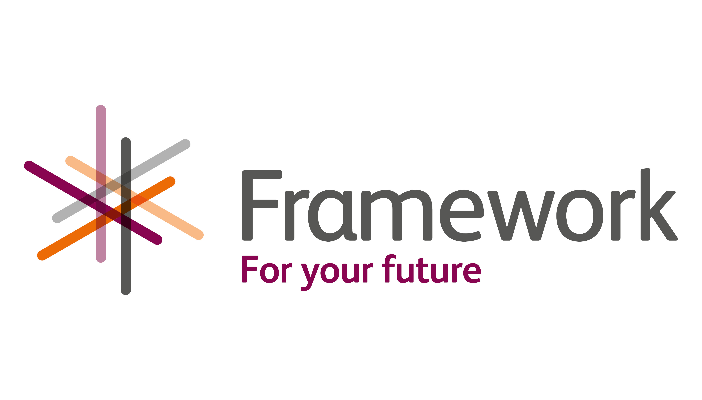

FRAMEWORKS
FRAMEWORKS
Un entorno de trabajo, o marco de trabajo es un conjunto estandarizado de conceptos, prácticas y criterios para enfocar un tipo de problemática particular que sirve como referencia, para enfrentar y resolver nuevos problemas de índole similar.
Django es un framework de desarrollo web de código abierto, escrito en Python, que respeta el patrón de diseño conocido como MVC (Modelo–Vista–Controlador)
Los Frameworks permiten entregar un proyecto en menos tiempo y con un código más limpio, cuya eficacia ya ha sido comprobada.

1. Para aplicaciones web
2. Para aplicaciones en general
3. Para tecnología AJAX
4. De gestión de contenidos
5. De Multimedia
Django es un framework de desarrollo web de código abierto, escrito en Python, que respeta el patrón de diseño conocido como MVC (Modelo–Vista–Controlador)
1. DJANGO
2. ANGULAR JS
3. LARAVEL
4. RUBY ON RAILS
5. REACT JS

Django es un framework de desarrollo web de código abierto, escrito en Python, que respeta el patrón de diseño conocido como MVC (Modelo–Vista–Controlador)

Django es un framework de desarrollo web de código abierto, escrito en Python, que respeta el patrón de diseño conocido como MVC (Modelo–Vista–Controlador)
Django es un framework de desarrollo web de código abierto, escrito en Python, que respeta el patrón de diseño conocido como MVC (Modelo–Vista–Controlador)